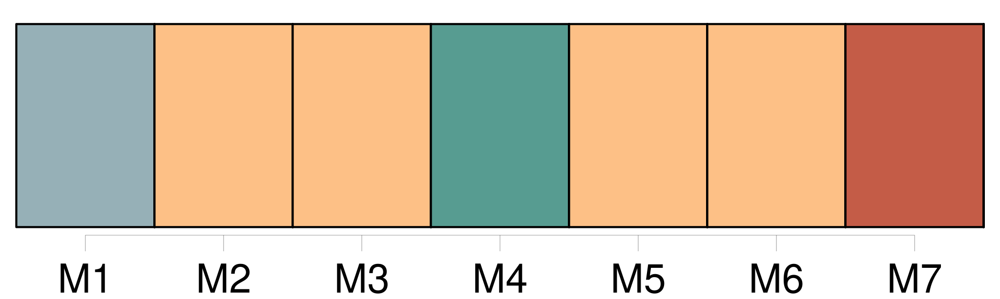

Longueur nb maillons : 397 mentions |
  |
Dites -moi, ma chère, ajouta-t -elle en s'adressant à la fille d'auberge, connaissez -vous dans cette ville [mademoiselle Pauline D] …… [4 phrases] Est [-elle] mariée?? est [-elle] morte?? [2 phrases] Une prompte libéralité de la jeune dame la décida à aller réveiller le chef, et, après un quart d'heure d'attente, qui parut mortellement long à notre voyageuse, on vint enfin lui apprendre que [mademoiselle Pauline D] …… n'était point mariée, et qu' [elle] habitait toujours la ville. [10 phrases] Comme [elle] pleurait, [ma pauvre amie] , ma douce Pauline, en m'embrassant sous cette cheminée où je sommeillais tout à l'heure sans savoir où j'étais!! Comme je pleurais, moi aussi, en écrivant sur le mur [son] nom au-dessous du mien, avec la date de notre séparation!! [Pauvre Pauline] !! [3 phrases] [Elle] si aimante, si supérieure à tout ce qui l'entourait!! Et pourtant je voulais [la] fuir, je m'étais promis de ne [la] revoir jamais!! — Je vais peut-être [lui] apporter un peu de consolation, mettre un jour de bonheur dans [sa] triste vie!! — Si [elle] me repoussait pourtant!! Si [elle] était tombée sous l'empire des préjugés!! [2 phrases] N'a-t [-elle] pas cessé tout à coup de m'écrire en apprenant le parti que j'avais pris?? [Elle] aura craint de se corrompre ou de se dégrader dans le contact d'une vie comme la mienne!! [1 phrases] [Pauline] !! [elle] m'aimait tant, et [elle] aurait rougi de moi!! [1 phrases] À présent que je me sens si près d' [elle] , à présent que je suis sûre de [la] retrouver dans la situation où je [l'] ai connue, je ne peux plus résister au désir de [la] voir. [1 phrases] je [la] verrai, dût [-elle] me repousser!! Si [elle] le fait, que la honte en retombe sur [elle] !!
J'aurai vaincu les justes défiances de mon orgueil, j'aurai été fidèle à la religion du passé ; c'est [elle] qui se sera parjurée! [7 phrases]
et [Pauline] , ma pauvre Pauline vit encore au milieu de tout cela, [elle] [qui] était si belle, si aimable, si instruite, [elle] [qui] aurait régné et brillé comme moi sur un monde de luxe et d'éclat! [1 phrases] La maison de [Pauline] n'avait rien de pittoresque, quoiqu'elle fût fort ancienne. [1 phrases]
Tout y avait l'air sombre et chagrin, depuis la figure de cuivre ciselée sur le marteau de la porte, jusqu'à celle de la vieille servante non moins laide et rechignée qui vint ouvrir, toisa l'étrangère avec dédain, et lui tourna le dos après lui avoir répondu sèchement : [1 phrases]
Cette maison lui rappelait les plus fraîches années de sa vie, les pures scènes de sa jeunesse ; mais, en comparant ces témoins de son passé au luxe de son existence présente, elle ne pouvait s'empêcher de plaindre [Pauline] , condamnée à végéter là comme la mousse verdâtre qui se traînait sur les murs humides. [6 phrases]
Une fenêtre à carreaux étroits et montés en plomb, ornée de pots de basilic et de géranium, éclairait seule cette vaste pièce ; mais une suave figure se dessinait dans la lumière de l'embrasure, et semblait placée là, comme à dessein, pour ressortir seule et par sa propre beauté dans le tableau : c'était [Pauline] [Elle] était bien changée, et, comme la voyageuse ne pouvait voir [son] visage, elle douta longtemps que ce fût [elle] Elle avait laissé [Pauline] plus petite de toute la tête, et maintenant [Pauline] était grande et d'une ténuité si excessive, qu'on eût dit qu' [elle] allait se briser en changeant d'attitude. [Elle] était vêtue de brun avec une petite collerette d'un blanc scrupuleux et d'une égalité de plis vraiment monastique. [Ses] beaux cheveux châtains étaient lissés sur [ses] tempes avec un soin affecté ; [elle] se livrait à un ouvrage classique, ennuyeux, odieux à toute organisation pensante : [elle] faisait de très-petits points réguliers avec une aiguille imperceptible sur un morceau de batiste dont [elle] comptait la trame fil par fil. [1 phrases] Quand la voyageuse eut fait quelques pas, elle distingua, dans la clarté de la fenêtre, les lignes brillantes du beau profil de [Pauline] : [ses] traits réguliers et calmes, [ses] grands yeux voilés et nonchalants, [son] front pur et uni, plutôt découvert qu'élevé, [sa] bouche délicate, qui semblait incapable de sourire. [Elle] était toujours admirablement belle et jolie, mais [elle] était maigre et d'une pâleur uniforme, qu'on pouvait regarder comme passée à l'état chronique.
Dans le premier instant, [son] ancienne amie fut tentée de [la] plaindre ; mais, en admirant la sérénité profonde de ce front mélancolique doucement penché sur son ouvrage, elle se sentit pénétrée de respect bien plus que de pitié.
Elle resta donc immobile et muette à [la] regarder ; mais, comme si sa présence se fût révélée à [Pauline] par un mouvement instinctif du cœur, [celle -ci] se tourna tout à coup vers elle et la regarda fixement sans dire un mot et sans changer de visage. — [Pauline] !! [1 phrases]
s'écria l'étrangère ; as [-tu] oublié la figure de Laurence? Alors [Pauline] jeta un cri, se leva, et retomba sans force sur un siége.
Laurence était déjà dans [ses] bras, et toutes deux pleuraient. — [Tu] ne me reconnaissais pas?? [3 phrases] répondit [Pauline] [Je] te reconnaissais bien, mais [je] n'étais pas étonnée. [2 phrases] Comment te dirai [-je] ?? [1 phrases] [Ma] mère appelle cela des visions. [Moi] , je sais bien que [je] ne suis pas folle ; mais [je] pense que Dieu permet souvent, pour [me] consoler dans [mon] isolement, que les personnes que [j'] aime [m'] apparaissent tout à coup au milieu de [mes] rêveries. Va, bien souvent [je] t'ai vue là devant cette porte, debout comme tu étais tout à l'heure, et [me] regardant d'un air indécis. [J'] avais coutume de ne rien dire et de ne pas bouger, pour que l'apparition ne s'envolât pas. [Je] n'ai été surprise que quand [je] t'ai entendue parler. [1 phrases] alors, ta voix [m'] a réveillée!! elle est venue [me] frapper jusqu'au cœur!! [2 phrases]
dis [-moi] bien que c'est toi!
Quand Laurence eut timidement exprimé à [son amie] la crainte qui l'avait empêchée depuis plusieurs années de [lui] donner des marques de son souvenir, [Pauline] l'embrassa en pleurant. [2 phrases] dit [-elle] , tu as cru que [je] te méprisais, que [je] rougissais de toi!!
[moi] [qui] t'ai conservé toujours une si haute estime, [moi] [qui] savais si bien que, dans aucune situation de la vie, il n'était possible à une âme comme la tienne de s'égarer!
Laurence rougit et pâlit en écoutant ces paroles ; elle renferma un soupir, et baisa la main de [Pauline] avec un sentiment de vénération. — Il est bien vrai, reprit [Pauline] , que ta condition présente révolte les opinions étroites et intolérantes de toutes les personnes que [je] vois. Une seule porte dans [sa] sévérité un reste d'affection et de regret : c'est [ma] mère. [5 phrases]
répondit [Pauline] , il serait bien facile de la tromper ; elle est aveugle. [3 phrases] Laurence resta accablée à cette nouvelle, et, songeant à l'affreuse existence de [Pauline] , elle [la] regardait fixement avec l'expression d'une compassion profonde et pourtant comprimée par le respect.
[Pauline] la comprit, et, lui pressant la main avec tendresse, [elle] lui dit avec une naïveté touchante : [J'] ai failli me marier il y a cinq ans ; un an après, [ma] mère a perdu la vue. [1 phrases]
si [j'] avais été mariée, qui sait si [je] l'aurais pu? [1 phrases]
— Il est évident, dit -elle en souriant à [son amie] à travers ses pleurs, que [tu] aurais été distraite par mille autres soins également sacrés, et qu'elle eût été plus à plaindre qu' [elle] ne l'est.
— [Je] l'entends remuer, dit [Pauline]
Et [elle] passa vivement, mais avec assez d'adresse pour ne pas faire le moindre bruit, dans la chambre voisine. Laurence [la] suivit sur la pointe du pied, et vit la vieille femme aveugle étendue sur son lit en forme de corbillard. [3 phrases] [Pauline] s'approcha de [sa] mère, [pencha] doucement [son] visage vers ce visage affreux, et lui [demanda] bien bas si elle dormait. [1 phrases]
[Pauline] arrangea ses couvertures avec soin sur ses membres étiques, [referma] doucement le rideau, et [reconduisit] [son amie] dans le salon. — Causons, lui dit [-elle] ; [ma] mère se lève tard ordinairement. [2 phrases] Mais, dis [-moi] , Laurence, tu as pu croire que [je] te …… [1 phrases] [je] ne dirai pas ce mot!! [1 phrases] Quelle insulte tu [m'] as faite là!! Mais c'est [ma] faute après tout. [J'] aurais dû prévoir que tu concevrais des doutes sur [mon] affection, [j'] aurais dû t'expliquer [mes] motifs …… [2 phrases] Tu [m'] aurais accusée de faiblesse, quand, au contraire, il [me] fallait tant de force pour renoncer à t'écrire, à te suivre, dans ce monde inconnu où malgré [moi] , [mon] cœur a été si souvent te chercher!! Et puis [je] n'osais pas accuser [ma] mère ; [je] ne pouvais pas me décider à t'avouer les petitesses de son caractère et les préjugés de son esprit. [J'] en étais victime ; mais [je] rougissais de les raconter. [2 phrases] À présent que te voilà près de [moi] , je retrouve toute [ma] confiance, tout [mon] abandon. [Je] te dirai tout. Mais d'abord parlons de toi, car [mon] existence est si monotone, si nulle, si pâle à côté de la tienne!!
Que de choses tu dois avoir à [me] raconter! [1 phrases] Son récit fut même beaucoup moins long que [Pauline] ne s'y attendait. [4 phrases]
Elle vint habiter Saint-Front, où elle réussit à vivre quatre ans en qualité de sous-maîtresse dans un pensionnat de jeunes filles, et où elle contracta une étroite amitié avec [l'aînée de ses élèves,] Pauline, âgée de quinze ans comme elle. [5 phrases] Ses erreurs, ses passions, ses douleurs de femme, ses déceptions et ses repentirs, elle ne les raconta point à [Pauline]
Il était encore trop tôt : [Pauline] n'eût pas compris.
Ii [2 phrases] dit la mère aveugle en s'asseyant sur le bord de son lit, appuyée sur [sa fille] , qui est donc là près de nous?? [2 phrases]
— Non, maman, répondit [Pauline] , ce n'est pas madame Ducornay. [2 phrases]
— Devinez, dit [Pauline] en faisant signe à Laurence de toucher la main de [sa] mère. [12 phrases]
demanda Laurence bas à [Pauline]
— Nullement, répondit [celle -ci] ; mais elle a toute sa mémoire ; et, d'ailleurs, notre vie compte si peu d'événements, qu'il est impossible qu'elle ne te reconnaisse pas tout à l'heure.
À peine [Pauline] eut [-elle] prononcé ces mots, que l'aveugle, repoussant la main de Laurence avec un sentiment de dégoût qui allait jusqu'à l'horreur, dit de sa voix sèche et cassée : [2 phrases]
[Vous] ne deviez pas la recevoir, [Pauline] — Ô [ma] mère??
s'écria [Pauline] en rougissant de honte et de chagrin, et en pressant [sa] mère dans [ses] bras pour lui faire comprendre ce qu' [elle] éprouvait.
Laurence pâlit ; puis, se remettant aussitôt : — Allons, reprit l'aveugle, qui craignait instinctivement de déplaire à [sa fille] , en raison du besoin qu'elle avait de [son] dévouement, laissez -moi le temps de me remettre un peu ; je suis si surprise!! [4 phrases]
— Et elle est toujours Laurence, dit avec chaleur [la bonne Pauline] en l'embrassant, toujours la même âme généreuse, le même noble cœur … — Allons, arrange -moi, [ma fille] , dit l'aveugle qui voulait changer de propos, ne pouvant se résoudre ni à contredire [sa fille] ni à réparer sa dureté envers Laurence ; [coiffe] -moi donc, [Pauline] ; j'oublie, moi, que les autres ne sont point aveugles et qu'ils voient en moi quelque chose d'affreux. [Donne] -moi mon voile, mon mantelet …… C'est bien, et maintenant [apporte] -moi mon chocolat de santé, et [offres] -en aussi à …… [1 phrases] [Pauline] jeta à [son] amie un regard suppliant auquel celle -ci répondit par un baiser. [2 phrases] L'aveugle vivait dans une telle dépendance de [sa fille] , qu'une contrariété, une distraction de [celle -ci] pouvait apporter le trouble dans cette suite d'innombrables petites attentions dont la moindre était nécessaire pour lui rendre la vie tolérable. [2 phrases] Elle en fit encore une autre qui l'attrista davantage : c'est que la mère avait une peur réelle de [sa fille] On eût dit qu'à travers cet admirable sacrifice de tous les instants, [Pauline] laissait percer malgré [elle] un muet mais éternel reproche, que [sa] mère comprenait fort bien et redoutait affreusement. [1 phrases] Laurence, qui était douée d'un esprit judicieux et d'un cœur noble, se dit qu'il n'en pouvait pas être autrement ; que, d'ailleurs, cette souffrance invincible chez [Pauline] n'ôtait rien à [sa] patience et ne faisait qu'ajouter à [ses mérites] [3 phrases] Déjà l'horreur de la vie réelle se montrait derrière cette poésie, dont au premier moment elle avait, de ses yeux d'artiste, enveloppé la sainte existence de [Pauline] Elle eût voulu pouvoir persister dans son illusion, [la] croire heureuse et rayonnante dans [son] martyre comme une vierge catholique des anciens jours, voir la mère heureuse aussi, oubliant sa misère pour ne songer qu'à la joie d'être aimée et assistée ainsi ; enfin elle eût voulu, puisque ce sombre tableau d'intérieur était sous ses yeux, y contempler des anges de lumière, et non de tristes figures chagrines et froides comme la réalité. Le plus léger pli sur le front angélique de [Pauline] faisait ombre à ce tableau ; un mot prononcé sèchement par cette bouche si pure détruisait la mansuétude mystérieuse que Laurence, au premier abord, y avait vue régner. [2 phrases] [La fille] , tout en frémissant à l'idée des pompes mondaines où [son] amie s'était jetée, avait souvent ressenti, peut-être à [son] insu, des élans de curiosité pour ce monde inconnu, plein de terreurs et de prestiges, où [ses] principes [lui] défendaient de porter un seul regard. En voyant Laurence, en admirant sa beauté, sa grâce, ses manières tantôt nobles comme celles d'une reine de théâtre, tantôt libres et enjouées comme celles d'un enfant ( car l'artiste aimée du public est comme un enfant à qui l'univers sert de famille ), [elle] sentait éclore en [elle] un sentiment à la fois enivrant et douloureux, quelque chose qui tenait le milieu entre l'admiration et la crainte, entre la tendresse et l'envie. [1 phrases] La mère de [Pauline] , quoique remplie d'entêtement dévot et de morgue provinciale, était une femme assez distinguée et assez instruite pour le monde où elle avait vécu. [7 phrases] Cependant l'aveugle insista tellement, et [Pauline] , à l'idée de se séparer de nouveau, et pour jamais sans doute, de [son] amie, versa des larmes si sincères, que Laurence céda, écrivit à sa mère de ne pas être inquiète si elle retardait d'un jour son arrivée à Lyon, et ne commanda ses chevaux que pour le lendemain au soir. [12 phrases]
, et, quoique je sois actrice, je vous assure que je l'aime autant que [Pauline] vous aime. [36 phrases] fut un peu effrayée de cette démarche ; [Pauline] , [qui] la comprit fort bien, en fut inquiète et blessée ; Laurence ne fit qu'en rire, et, s'adressant au maire, elle l'appela par son nom, lui demanda des nouvelles de toutes les personnes de sa famille et de son intimité, lui nommant avec une merveilleuse mémoire jusqu'au plus petit de ses enfants, l'intrigua pendant un quart d'heure, et finit par s'en faire reconnaître. Elle fut si aimable et si jolie dans ce badinage, que le bon maire en tomba amoureux comme un fou, voulut lui baiser la main, et ne se retira que lorsque madame D … et [Pauline] lui eurent promis de le faire dîner chez elles ce même jour avec la belle actrice de la capitale. [3 phrases] Jamais l'aveugle ne s'était autant amusée ; [Pauline] était singulièrement agitée ; [elle] s'étonnait de se sentir triste au milieu de [sa] joie. [14 phrases] Enfin, en moins d'une heure, le vieux salon de [Pauline] fut rempli comme si [elle] eût invité toute la ville à une grande soirée. [11 phrases] [Pauline] ne pouvait comprendre qu'on pût, avec si peu de temps et de soin, se métamorphoser ainsi en voyage, et l'élégance de [son] amie [la] frappait d'une sorte de vertige. [4 phrases] Toutes ces femmes se tenaient d'un côté du salon comme un régiment en déroute, et de l'autre côté, entourée de [Pauline] , de [sa] mère et de quelques hommes de bon sens qui ne craignaient pas de causer respectueusement avec elle, Laurence siégeait comme une reine affable qui sourit à son peuple et le tient à distance. [16 phrases] Quant à [Pauline] , [elle] fut du commencement à la fin admirable pour [son] amie. [Elle] ne rougit point d'elle un seul instant, et bravant, avec un courage héroïque en province, le blâme qu'on s'apprêtait à déverser sur elle, [elle] prit franchement le parti d'être en public à l'égard de Laurence ce qu' [elle] était en particulier.
[Elle] l'accabla de soins, de prévenances, de respects même ; [elle] plaça elle -même un tabouret sous ses pieds, [elle] lui présenta elle -même le plateau de rafraîchissements ; puis [elle] répondit par un baiser plein d'effusion à son baiser de remercîment, et, quand [elle] se rassit auprès d'elle, [elle] tint [sa] main enlacée à la sienne toute la soirée sur le bras du fauteuil. Ce rôle était beau sans doute, et la présence de Laurence opérait des miracles, car un tel courage eût épouvanté [Pauline] si on [lui] en eût annoncé la nécessité la veille ; et maintenant il [lui] coûtait si peu, qu' [elle] s'en étonnait elle -même. Si [elle] eût pu descendre au fond de [sa] conscience, peut-être eût [-elle] découvert que ce rôle généreux était le seul qui [l'] élevât au niveau de Laurence à [ses] propres yeux.
Il est certain que, jusque -là, la grâce, la noblesse et l'intelligence de l'actrice [l'] avaient déconcertée un peu ; mais, depuis qu' [elle] l'avait posée auprès d' [elle] en protégée, [Pauline] ne s'apercevait plus de cette supériorité, difficile à accepter de femme à femme aussi bien que d'homme à homme. Il est certain que, lorsque les deux amies et la mère aveugle se retrouvèrent seules ensemble au coin du feu, [Pauline] fut surprise et même un peu blessée de voir que Laurence reportait toute sa reconnaissance sur la vieille femme. [2 phrases] — Quant à [toi] , [ma Pauline] , dit -elle à [son amie] lorsqu'elles furent tête à tête, je [te] fâcherais si je [te] faisais le même remercîment. [Tu] n'as point de préjugés assez obstinés pour que [ton] mépris de la sottise provinciale [me] semble un grand effort.
Je [te] connais, [tu] ne serais plus [toi -même] si [tu] n'avais pas trouvé un vrai plaisir à [t'] élever de toute [ta] hauteur au-dessus de ces bégueules.
— C'est à cause de toi que cela [m'] est devenu un plaisir, répondit [Pauline] un peu déconcertée. [1 phrases]
reprit Laurence en [l'] embrassant, c'est à cause de [vous -même] ! Était -ce un instinct d'ingratitude qui faisait parler ainsi l'amie de [Pauline] ?? [2 phrases] Si l'effort de [son amie] lui eût paru sublime, elle ne se serait pas crue humiliée de [lui] montrer de la reconnaissance ; mais elle avait un sentiment si ferme et si légitime de sa propre dignité, qu'elle croyait le courage de [Pauline] aussi naturel, aussi facile que le sien. Elle ne se doutait nullement de l'angoisse secrète qu' [elle] excitait dans cette âme troublée. [1 phrases] [Pauline] , ne voulant pas la quitter d'un instant, exigea qu'elle dormît dans [son] propre lit.
[Elle] s'était fait arranger un grand canapé où [elle] se coucha non loin d'elle, afin de pouvoir causer le plus longtemps possible. Chaque moment augmentait l'inquiétude de [la jeune recluse] , et [son] désir de comprendre la vie, les jouissances de l'art et celles de la gloire, celles de l'activité et celles de l'indépendance. Laurence éludait [ses] questions. Il lui semblait imprudent de la part de [Pauline] de vouloir connaître les avantages d'une position si différente de la sienne ; il lui eût semblé peu délicat à elle -même de [lui] en faire un tableau séduisant. Elle s'efforça de répondre à [ses] questions par d'autres questions ; elle voulut [lui] faire dire les joies intimes de [sa] vie évangélique, et tourner toute l'exaltation de leur entretien vers cette poésie du devoir qui lui semblait devoir être le partage d'une âme pieuse et résignée. Mais [Pauline] ne répondit que par des réticences. Dans leur premier entretien de la matinée, [elle] avait épuisé tout ce que [sa] vertu avait d'orgueil et de finesse pour dissimuler [sa] souffrance. Le soir, [elle] ne songeait déjà plus à [son] rôle. [1 phrases] Elle l'emporta, et força Laurence à s'abandonner au plaisir le plus grand qu' [elle] connût, celui d'épancher [son] âme avec confiance et naïveté. [1 phrases]
Elle s'honorait de nobles amitiés ; elle avait connu aussi des affections passionnées, et, quoiqu'elle eût la délicatesse de n'en point parler à [Pauline] , la présence de ces souvenirs encore palpitants donnait à son éloquence naturelle une énergie pleine de charme et d'entraînement. [Pauline] dévorait ses paroles. Elles tombaient dans [son] cœur et dans [son] cerveau comme une pluie de feu ; pâle, les cheveux épars, l'œil embrasé, le coude appuyé sur [son] chevet virginal, [elle] était belle comme une nymphe antique à la lueur pâle de la lampe qui brûlait entre les deux lits. Laurence [la] vit et fut frappée de l'expression de [ses] traits. [1 phrases]
Puis, involontairement, revenant à ses idées théâtrales et oubliant tout ce qu'elles venaient de se dire, elle s'écria, frappée de plus en plus : Les classiques qui m'ont voulu enseigner le rôle de Phèdre ne [t'] avaient pas vue ainsi. [3 phrases]
…
Je parie que [tu] le sais, [toi] … [2 phrases] répondit [Pauline] en s'efforçant de sourire.
Que ferais [-je] de cela? [1 phrases]
moi, si j'avais, comme [toi] , le temps d'étudier tout, s'écria Laurence, je voudrais tout savoir! [1 phrases] [Pauline] fit un douloureux retour sur [elle -même] ; [elle] se demanda à quoi, en effet, servaient tous ces merveilleux ouvrages de broderie qui remplissaient [ses] longues heures de silence et de solitude, et qui n'occupaient ni [sa] pensée ni [son] cœur. [Elle] fut effrayée de tant de belles années perdues, et il [lui] sembla qu' [elle] avait fait de [ses] plus nobles facultés, comme de [son] temps le plus précieux, un usage stupide, presque impie.
[Elle] se releva encore sur [son] coude, et dit à Laurence : [4 phrases]
Ce prompt et paisible sommeil augmenta l'angoisse et l'amertume de [Pauline] — Elle est heureuse, pensa-t [-elle] …… [1 phrases] Et [moi] !! [2 phrases] [Pauline] ne dormit pas de toute la nuit. [6 phrases] Et elle laissait échapper des exclamations, des phrases de drame ; elle cherchait des poses devant le vieux miroir de [Pauline] Le sang-froid de la femme de chambre, habituée à toutes ces choses, et l'oubli complet où Laurence semblait être de tous les objets extérieurs, étonnaient au dernier point [la jeune provinciale] [Elle] ne savait pas si [elle] devait rire ou s'effrayer de ces airs de pythonisse ; puis [elle] était frappée de la beauté tragique de Laurence, comme Laurence l'avait été de la sienne quelques heures auparavant.
Mais [elle] se disait :
Au fond, elle est fort heureuse ; et [moi] , [qui] devrais avoir le calme de Dieu sur le front, il se trouve que [je] ressemble à Phèdre!
Comme [elle] pensait cela, Laurence [lui] dit brusquement : [4 phrases] Toute inspiration est une réminiscence, n'est -ce pas, [Pauline] ?? [Tu] ne te coiffes pas bien, [mon enfant] ; [tresse] donc [tes] cheveux au lieu de les lisser ainsi en bandeau. [1 phrases]
Et, tandis que la femme de chambre faisait une tresse, Laurence fit l'autre, et en un instant [Pauline] se trouva si bien coiffée et si embellie, qu' [elle] fit un cri de surprise. [2 phrases]
s'écria-t [-elle] ; [je] ne me coiffais pas ainsi de peur d'y perdre trop de temps, et j'en mettais le double. [2 phrases]
— Et à quoi cela [me] servirait -il, à [moi] ; dit [Pauline] en laissant tomber [ses] coudes sur la toilette, et en se regardant au miroir d'un air sombre et désolé. — Tiens, s'écria Laurence, [te] voilà encore Phèdre!!
[Reste] comme cela, j'étudie! [Pauline] sentit [ses] yeux se remplir de larmes. Pour que Laurence ne s'en aperçût pas ( et c'est ce que [Pauline] craignait le plus au monde dans cet instant ), [elle] s'enfuit dans une autre pièce et [dévora] d'amers sanglots.
Il y avait de la douleur et de la colère dans [son] âme, mais [elle] ne savait pas elle -même pourquoi ces orages s'élevaient en [elle] [1 phrases] [Pauline] avait pleuré en la voyant monter en voiture, et, cette fois, c'était de regret ; car Laurence venait de [la] faire vivre pendant trente-six heures, et [elle] pensait avec effroi au lendemain. [Elle] tomba accablée de fatigue dans [son] lit, et [s'endormit] brisée, désirant ne plus s'éveiller. Lorsqu' [elle] s'éveilla, [elle] jeta un regard de morne épouvante sur ces murailles qui ne gardaient aucune trace du rêve que Laurence y avait évoqué. [Elle] se leva lentement, [s'assit] machinalement devant [son] miroir, et [essaya] de refaire [ses] tresses de la veille.
Tout à coup, rappelée à la réalité par le chant de [son] serin qui s'éveillait dans sa cage, toujours gai, toujours indifférent à la captivité, [Pauline] se leva, [ouvrit] la cage, puis la fenêtre, et [poussa] dehors l'oiseau sédentaire, qui ne voulait pas s'envoler. [2 phrases]
dit [-elle] en le voyant revenir vers [elle] aussitôt. [Elle] retourna à [sa] toilette, défit [ses] tresses avec une sorte de rage, et [tomba] le visage sur [ses] mains crispées. [Elle] resta ainsi jusqu'à l'heure où [sa] mère s'éveillait. La fenêtre était restée ouverte, [Pauline] n'avait pas senti le froid. |

|
La ressource peut être téléchargée sur la page Ortolang
Si vous avez des questions ou vous voyez des erreurs, merci d'envoyer un mail à silvia.federzoni89@gmail.com
Site développé par S. Federzoni (contact)